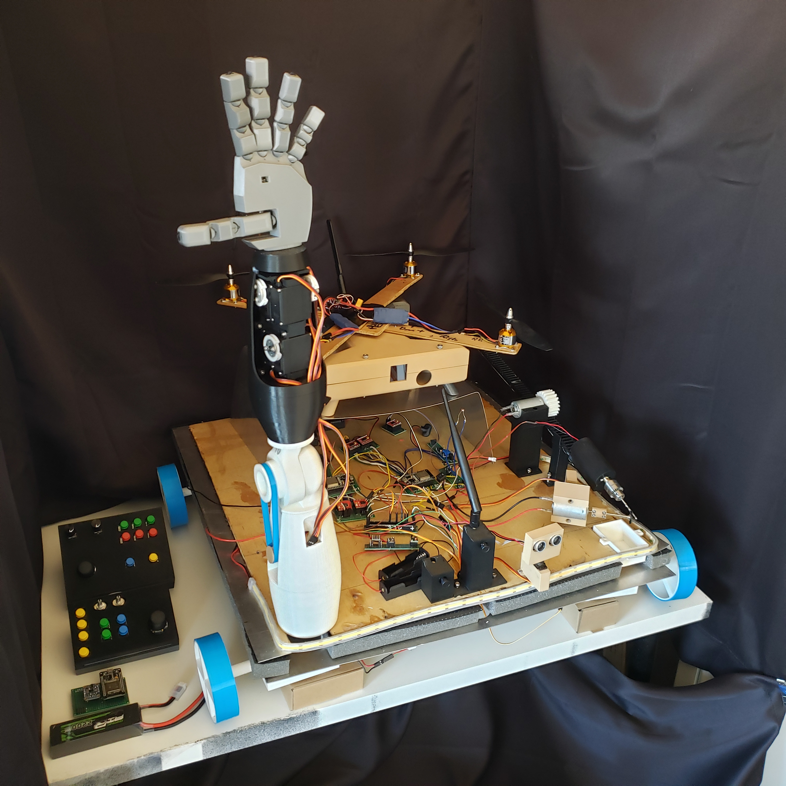
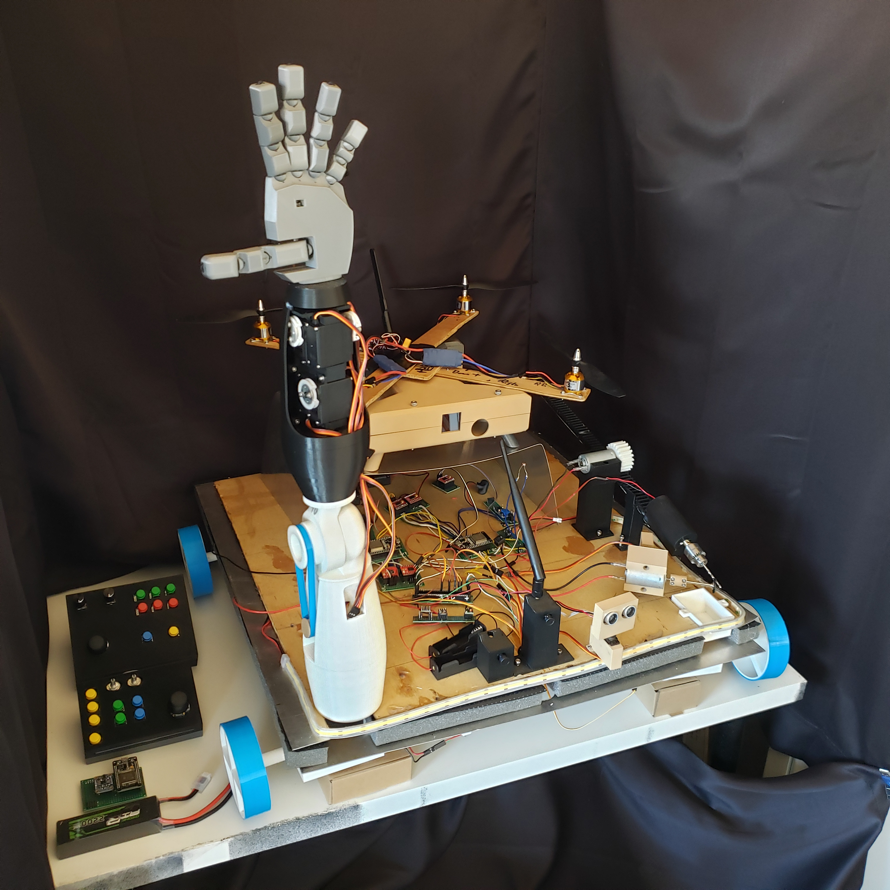
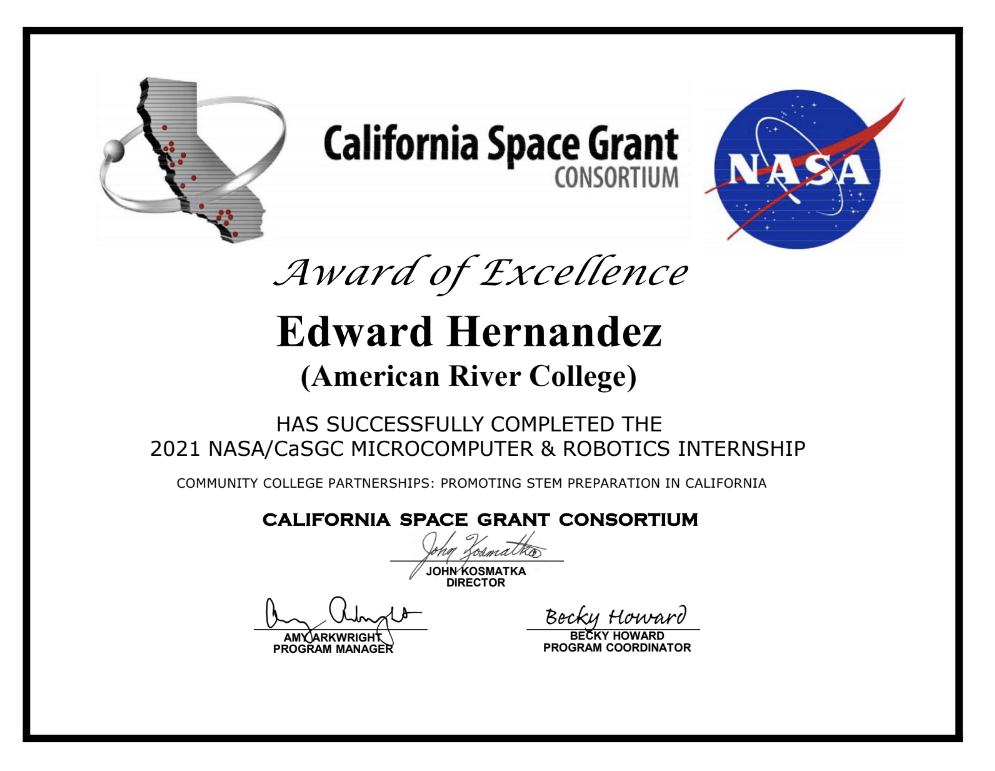

NASA Project: Autonomous Drone/Rover Hybrid
Overview
Version 1 of the Hybrid Exploratory VehicleVersion 2 of the Hybrid Exploratory Vehicle
 

Given the task of producing a solution for NASA's Artemis Program, I lead a team of initially 3 students with the goal of creating a robot able to most thoroughly examine the moon. The main goals for the robot were the following:
- Capable of travelling through land and air
- Remotely controllable at any place on Earth
- Built to survive extremely high temperatures of up to 1250C
- Standard autonomous vehicle capabilities (obstacle avoidance, dynamically responsive control systems, data logging, etc)
- Standard exploratory capabilities (excavation equipment, onboard storage, self-loading/unloading system)
To accomplish this, the robot was planned to consist of two sub-units, one for land travel and one for aerial travel, with both sub-units having the ability to combine as one machine. The overall unit would have standard obstacle avoidance capabilities, battery recharging systems, and asynchronous operation between the subvehicles.
Aside from the autonomous control systems the robot would have, a webserver was built to allow remote control of both sub-vehicles. This webserver also uses a MySQL backend to log information from each mission the robot would be deployed on. More information on this pure software side of the project is available here
Version 1 of the Vehicle
The original vehicle's primary purpose was to gather ground samples from lava tubes on the Lunar surface to return to Earth. The two excavators on the machine consist of a tungsten carbide drill bit and a diamond cutting wheel. These materials, among the hardest known, are necessary for rocks formed under high heats and pressures.
Electronic Communications
The land based component of the vehicle uses 4 Espressif microprocessors to read data from its onboard electronic sensors. The main controller sends inputs from the robots controller over radio communication to the main processor of the board. The main processor repackages the received data before sending the packets to the secondary processors which then use the data to perform movement and other functionality. Due to the small bandwith, the range of all wireless communications can exceed 450 meters. There are also provisions for all data to be recorded onto a microSD card, if the machine would fail during operation. If such data is recovered, a secure web server I created can house the information.
The air based vehicle uses an Espressif camera module for its main computer. Used as an IP camera, this processor creates a local secure WiFi network that approved users can connect to. Through this connection, operators can view the drones onboard camera feed in realtime, as well as control the drone remotely. There is also a 9-Axis IMU to allow the drone to keep stable flight patterns without instruction.
View all code for systems developed for this project here
Integrated Server
To complement the sensors onboard both the land based vehicle and air based vehicle, I developed a server using Node.js, Express.js and a Raspberry Pi. The server was envisioned to act as both a data warehouse for the onboard electronics, as well as a human-machine interface to allow humans to remotely monitor/control the vehicles actions. I created an example database in MySQL and linked that to the server with data on potential mission sites and dates. I also set permissions for different users within the database, and configured user access to the vehicles controls based on those permissions.
View the main Javascript code for the server here or view all of the server's project files on my Github.
Mechanical Construction
The land based unit can survive extreme heat with the use of nickel based super alloys. The drone, however, cannot carry such materials while being able to generate usable thrust. Thus the drone is made of a composite of used balsa wood, carbon fiber, fiberglass, epoxy resin, and various refractory chemical additives.
In practice, this composite would be replaced by Carbon-Carbon composite materials.
Version 2 of the Vehicle
After presenting the Version 1 design to NASA and other University's, I became a coordinator for this internship and was invited to mentor another group of students. With new students, the rover was split into two specialized designs. One design focused on searching for bioluminescent life on the moon using a Luciferase Assay, luminometer, and an autonomous robot arm to handle all specimen of interest. In the other, a ground penetrating radar system was the main tool, used to detect sub-surface deposits of liquid water. Combined, these machines have the capability to provide strong evidence regarding the presence of life on the moon. The final product of these efforts is shown at the top of this page.
Conclusion
Version 2 of the project was presented to NASA faculty and other California University's on February 25, 2022. The machine is no longer under development, though all documentation still exixts. Through this program, I have held 2 leadership positions, presented scientific presentations before established professional engineers and scientists, and developed skills in embedded systems, computer networking, full-stack application development, and materials science. My certificate of completion for this program is below:
